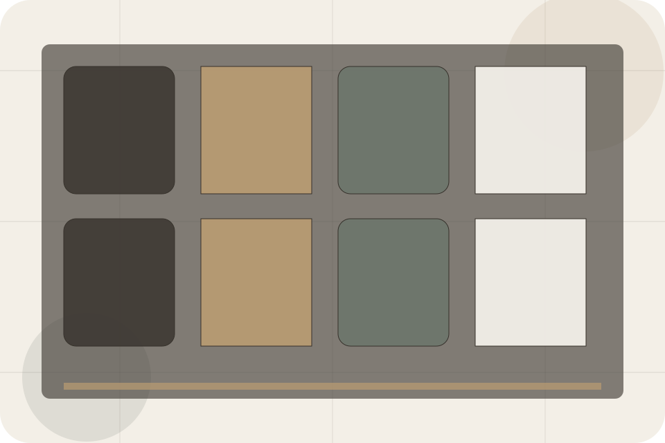
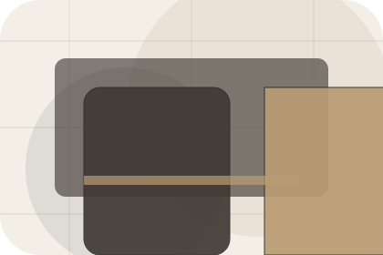
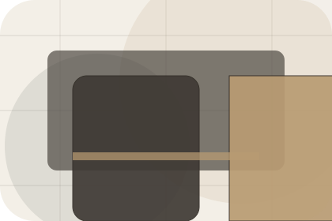
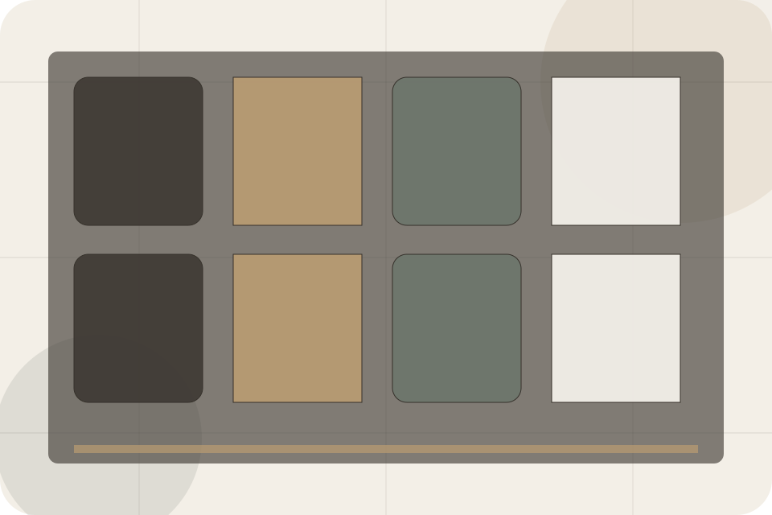
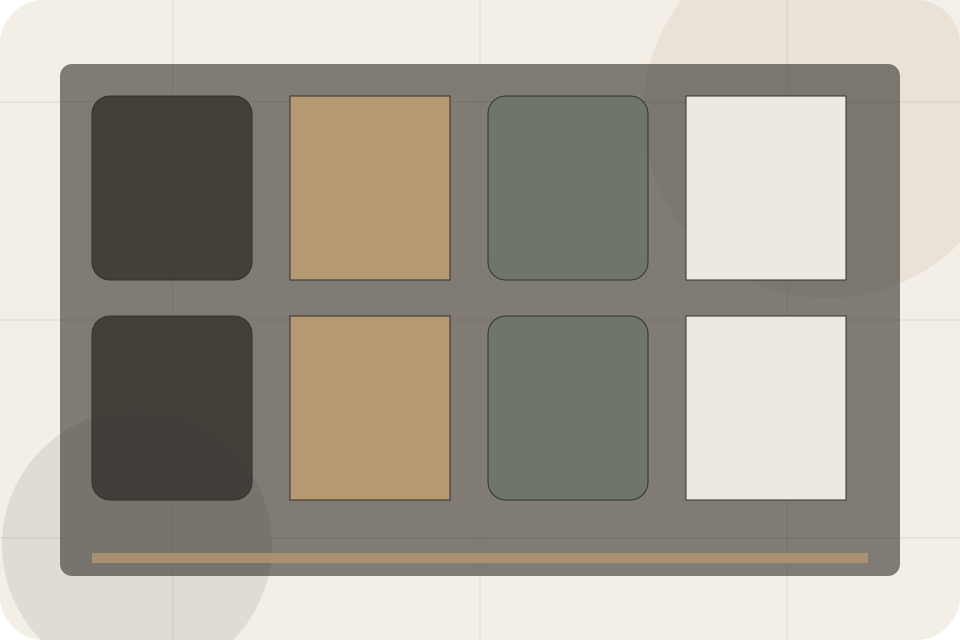
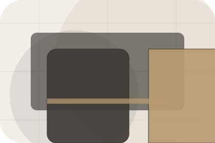
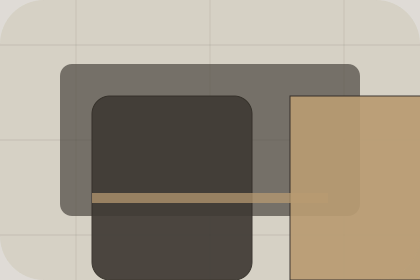

Rooms / 01
Rooms by Stay
Rooms shaped for hospitality, hotels & guest accommodation decisions.
Rooms opens as a clear hospitality decision hub: what Stay offers, who it helps, why it matters, and which route to take first.
The first screen combines positioning, proof, primary action, and fast internal navigation, so people can act immediately or compare the rest of the rooms route with context.
Check availabilityPlan the visitReserve with context
Serene full-bleed stay hero
Check Availability
Select the closest route and Stay keeps the next step, proof, and follow-up expectation aligned with comfort and availability.

Rooms / 02
Compare service routes
Types explains the practical scope, best-fit situations, and expected outcome so hospitality visitors can compare options without decoding jargon.
The section keeps the offer concrete: what is included, who it is best for, what decision it supports, and which linked route gives the deeper detail.
Explore Rooms- 01
Best Fit
Who should use types and when it belongs in the rooms journey.
- 02
What Changes
The practical benefit visitors should expect after choosing this route.
- 03
Deeper Route
Where to compare details, pricing, support, or contact options before committing.
Rooms / 03
Compare service routes
Features explains the practical scope, best-fit situations, and expected outcome so hospitality visitors can compare options without decoding jargon.
The section keeps the offer concrete: what is included, who it is best for, what decision it supports, and which linked route gives the deeper detail.
Explore RoomsStay structures features around best fit, what changes, and a clear next route so visitors can compare the block quickly before they check availability.
Check AvailabilityRooms / 04
Compare service routes
Views explains the practical scope, best-fit situations, and expected outcome so hospitality visitors can compare options without decoding jargon.
The section keeps the offer concrete: what is included, who it is best for, what decision it supports, and which linked route gives the deeper detail.
Explore Rooms
Best Fit
Who should use views and when it belongs in the rooms journey.
Rooms / 05
Compare service routes
Rates explains the practical scope, best-fit situations, and expected outcome so hospitality visitors can compare options without decoding jargon.
The section keeps the offer concrete: what is included, who it is best for, what decision it supports, and which linked route gives the deeper detail.
View PricingBest Fit
Who should use rates and when it belongs in the rooms journey.
What Changes
The practical benefit visitors should expect after choosing this route.

Deeper Route
Where to compare details, pricing, support, or contact options before committing.
Entry
Who should use rates and when it belongs in the rooms journey.
ScopedStay
The practical benefit visitors should expect after choosing this route.
QuotedPrivate
Where to compare details, pricing, support, or contact options before committing.
RetainerRooms / 06
Compare service routes
Availability explains the practical scope, best-fit situations, and expected outcome so hospitality visitors can compare options without decoding jargon.
The section keeps the offer concrete: what is included, who it is best for, what decision it supports, and which linked route gives the deeper detail.
Explore RoomsWho should use availability and when it belongs in the rooms journey.
The practical benefit visitors should expect after choosing this route.
Where to compare details, pricing, support, or contact options before committing.
Rooms / 07
Compare service routes
Amenities explains the practical scope, best-fit situations, and expected outcome so hospitality visitors can compare options without decoding jargon.
The section keeps the offer concrete: what is included, who it is best for, what decision it supports, and which linked route gives the deeper detail.
Explore RoomsBest Fit
Who should use amenities and when it belongs in the rooms journey.
What Changes
The practical benefit visitors should expect after choosing this route.
Deeper Route
Where to compare details, pricing, support, or contact options before committing.
Rooms / 08
Compare service routes
Gallery explains the practical scope, best-fit situations, and expected outcome so hospitality visitors can compare options without decoding jargon.
The section keeps the offer concrete: what is included, who it is best for, what decision it supports, and which linked route gives the deeper detail.
Explore RoomsBest Fit
Who should use gallery and when it belongs in the rooms journey.


Serene full-bleed stay hero
Check Availability
Select the closest route and Stay keeps the next step, proof, and follow-up expectation aligned with comfort and availability.
Rooms / 09
Compare service routes
Policies explains the practical scope, best-fit situations, and expected outcome so hospitality visitors can compare options without decoding jargon.
The section keeps the offer concrete: what is included, who it is best for, what decision it supports, and which linked route gives the deeper detail.
Explore Rooms
Best Fit
Who should use policies and when it belongs in the rooms journey.
Rooms / 10
Check Availability
Stay closes the rooms route with a clear action, a quick reminder of the value, and a low-friction way to check availability.
Visitors who are ready can use the primary action. Visitors who are still comparing can scan the section links, proof, and support routes before they check availability.
Check AvailabilityThe final block keeps the choice simple: act now, compare one more proof route, or send enough detail for a focused response.
Check Availabilitycomfort and availability
Check Availability
A hotel site with serene full-bleed rooms, understated booking modules, experience cards, and policy calm. Rooms ends with a direct path to check availability, plus enough context for visitors who still need to compare.

Check AvailabilityImportant notes before you act
Rates, availability, cancellation, and access policies depend on selected dates and booking terms.